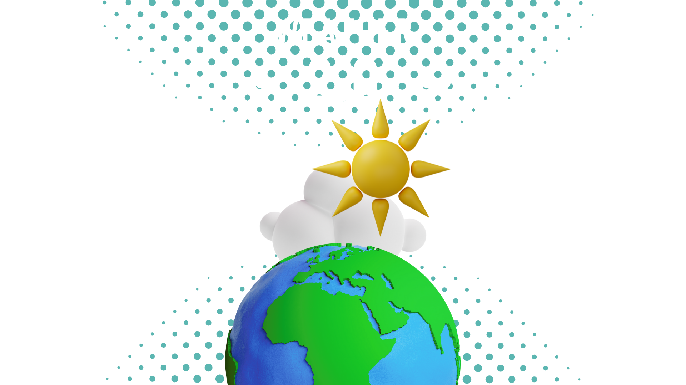

sunny Sunshine or Rain thunderstorm
It turns out the weather is more than just hot or cold - it's a lot more! Now that the weather has gotten more complex, you need the help. This is where weather 2.0 comes in. It's the leading weather page for getting all the weather stats on the weather. The difference between the first, outdated stop for forecasts and the most sought-after location is weather2.0’s cutting-edge technology and extensive data bank.
